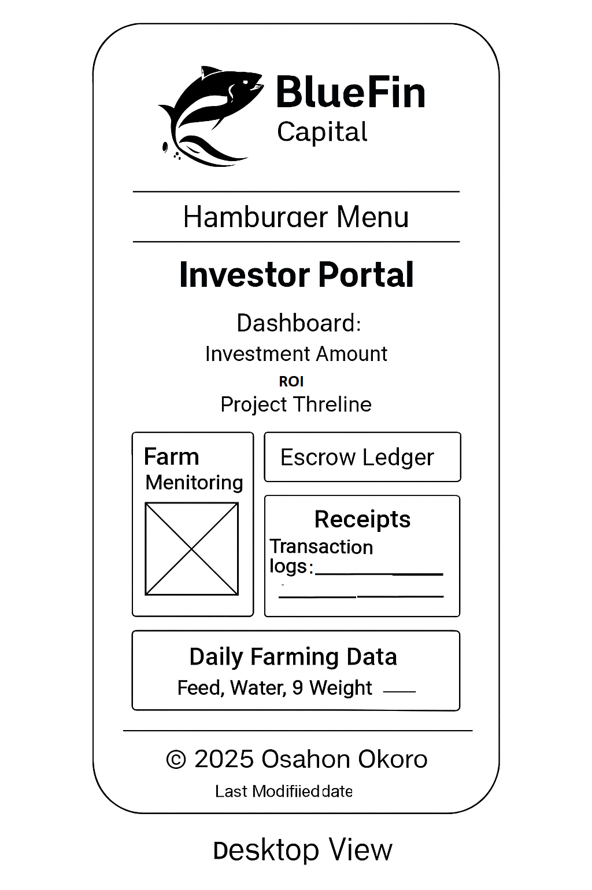
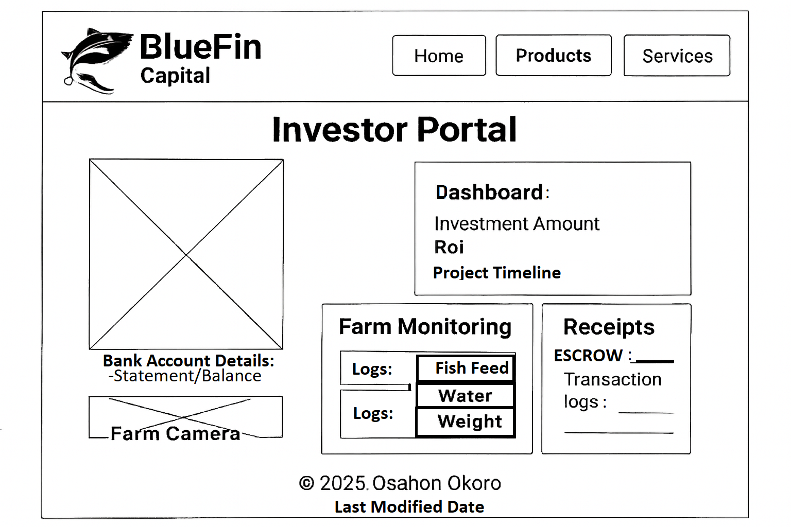

Site Name
BlueFin Capital is a professional aquaculture investment platform that connects investors to fish farming operations with full transparency and daily updates.
Site Purpose
The site introduces BlueFin Capital’s fish farming investment model, explains how the escrow and verification system works, and outlines the farming cycle from funding to harvest.
Scenarios
- How can I monitor the progress of my fish investment?
- Where can I view daily farming logs and receipts?
Color Schema
- Primary Color: #003366 – used for headers, navigation, and footer
- Accent Color: #00aaff – used for buttons and highlights
Typography
- Roboto – used for body text and descriptions
- Montserrat – used for headings and navigation
Wireframes
Mobile View

Desktop View
